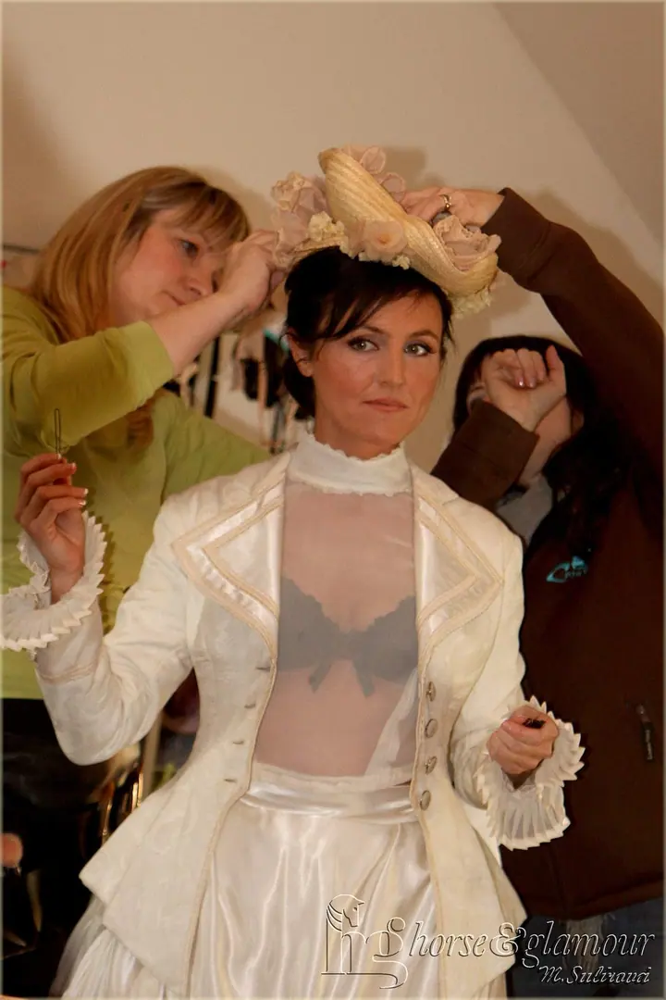
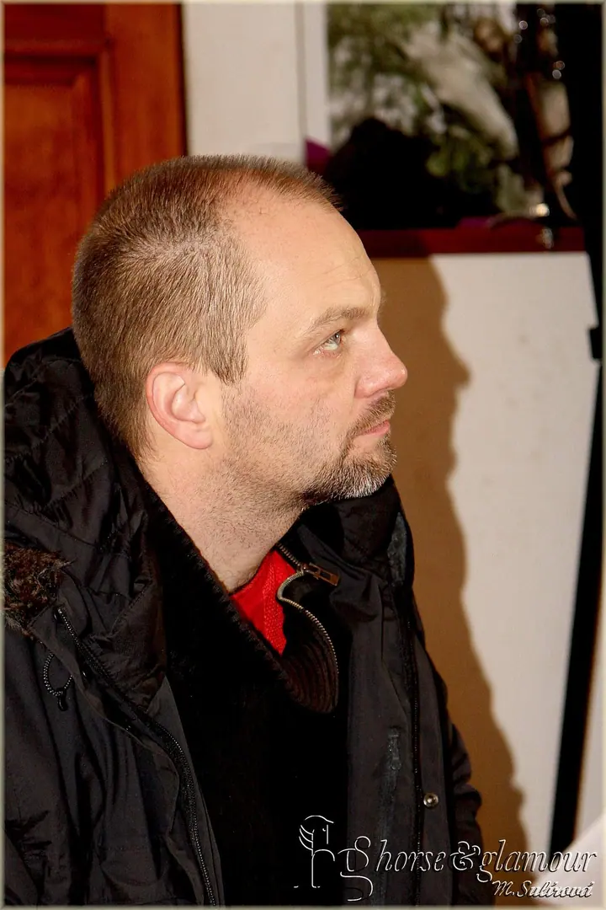
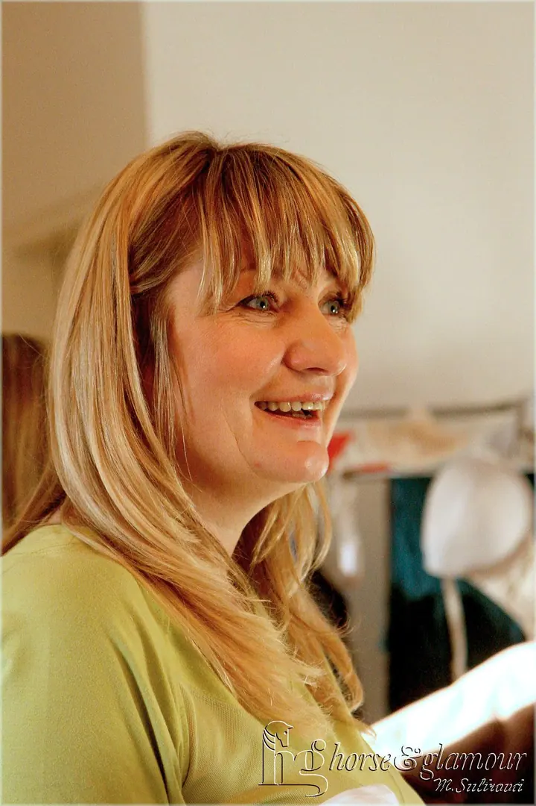
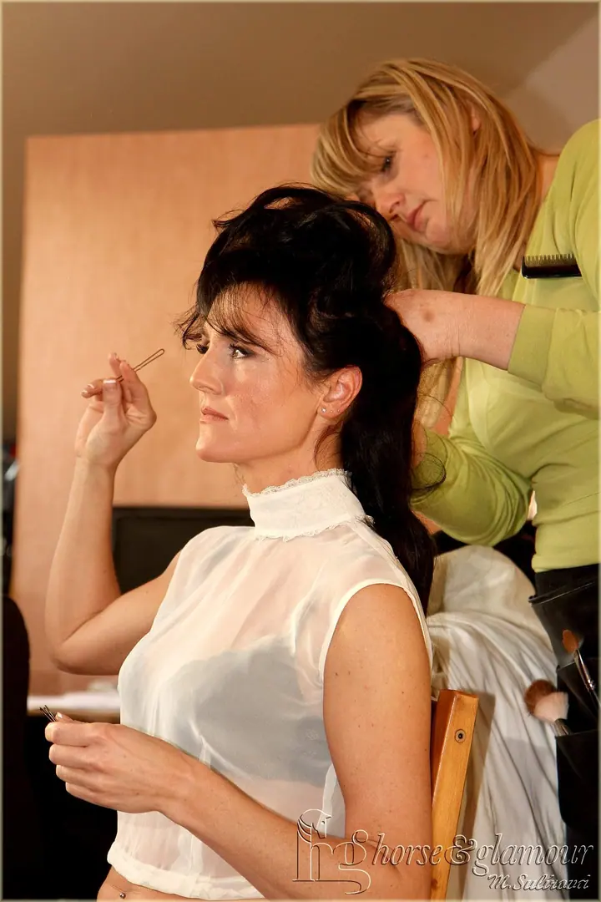
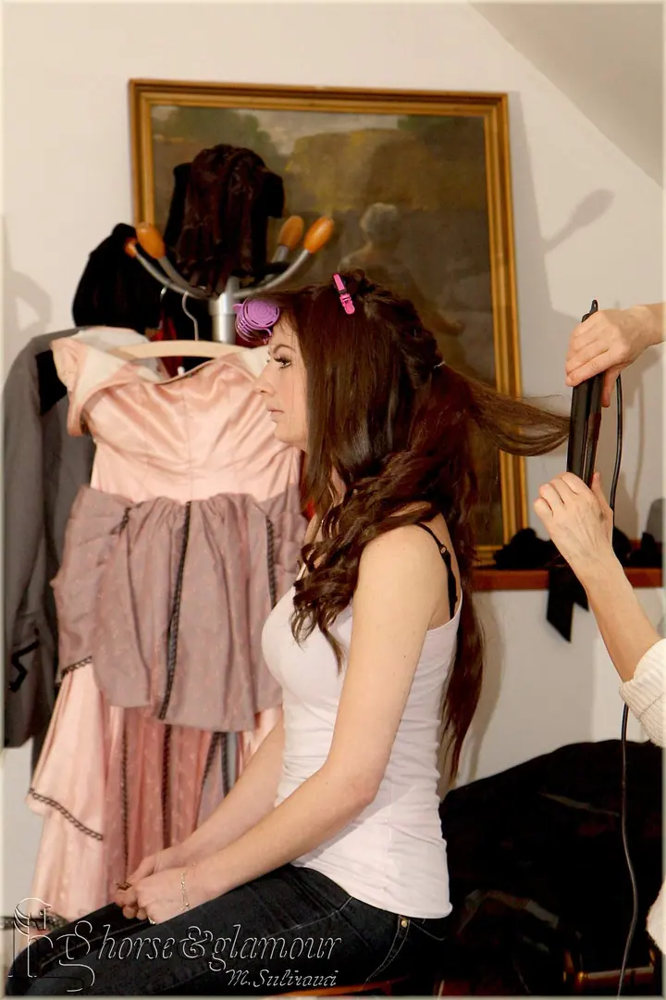
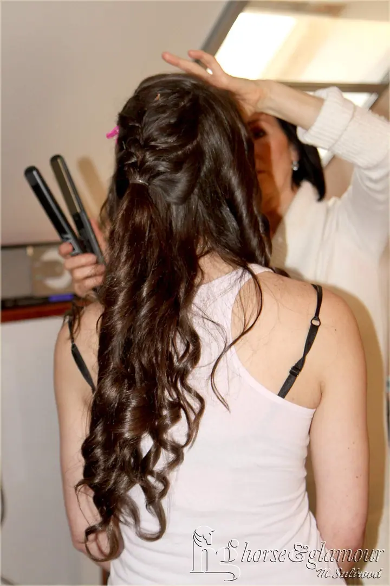
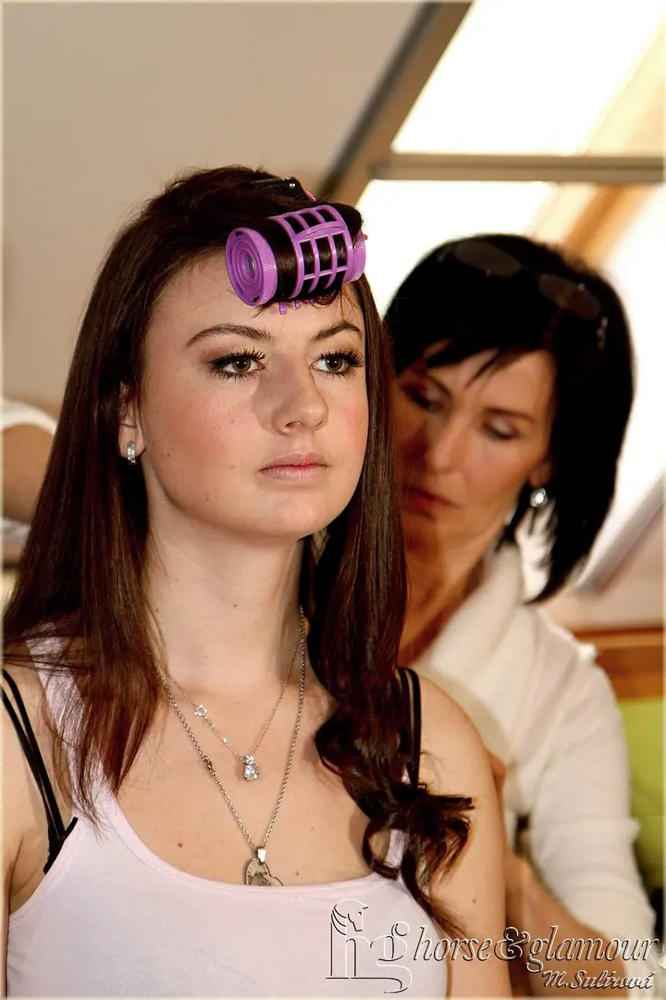
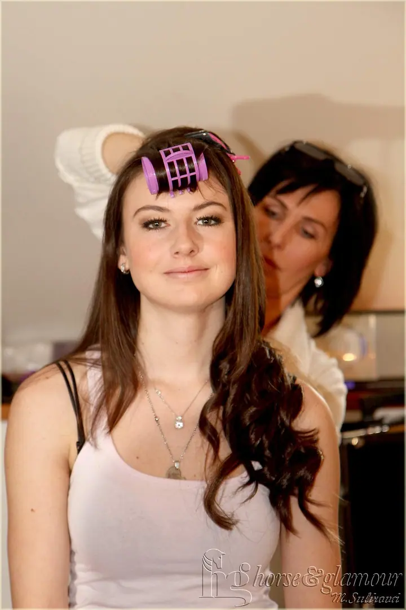
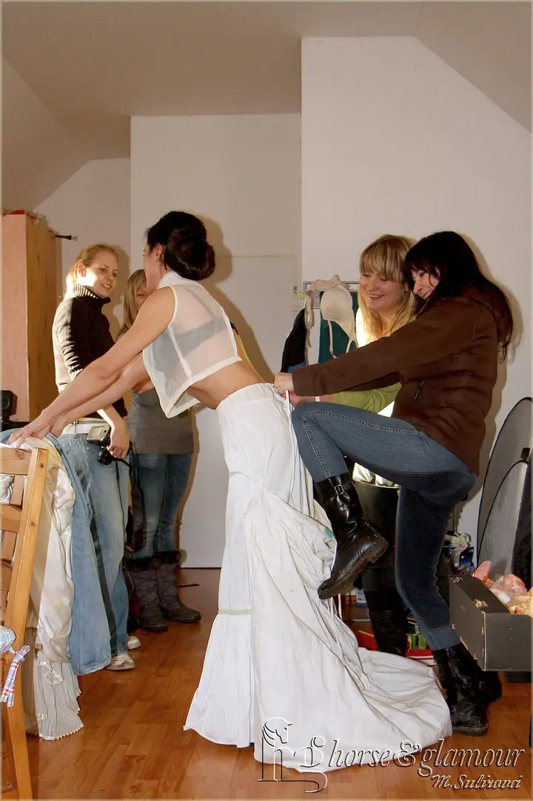

01 / 04
Závody a focení na akcích
Fotím jezdecké závody, tréninky i akce jako Hubertova jízda. Fotky z každé akce pak najdete pohromadě v galerii.
Zeptat se na termín→








Fotím akce, koně i lidi kolem nich
Zeptat se na termín →(01) Ahoj
Jmenuji se Mirka Sulírová a fotografování mě baví. Fotím lidi , jezdecké závody a akce i psí lumpárny . Pořád se učím nové věci a každé focení mě posouvá dál.
(02) Co fotím
01 / 04
Fotím jezdecké závody, tréninky i akce jako Hubertova jízda. Fotky z každé akce pak najdete pohromadě v galerii.
Zeptat se na termín→02 / 04
Fotím portréty i zákulisí focení, od líčení a česání až po hotovou modelku před objektivem.
Zeptat se na termín→(04) Postup
Od první zprávy po hotovou galerii.
Krok 1 z 4
Napište mi nebo zavolejte a řekněte, co chcete fotit: akci, koně, pejska nebo portrét.
Krok 2 z 4
Domluvíme termín, místo a to, na čem vám u fotek nejvíc záleží.
Krok 3 z 4
Na akci nebo na focení přijedu a fotím v klidu a bez zbytečného aranžování.
Krok 4 z 4
Fotky projdu, vyberu ty nejlepší, upravím je a pošlu vám je.
Za každou fotkou je kus přípravy
(05) Za objektivem
S focením na zrcadlovku jsem začala, když jsme si pořídili štěňátko boxerky. Moc jsem chtěla zachytit, jak běhá a dělá lumpárny, a vůbec jsem nechápala, proč mi z kompaktu lezou rozmazané a neostré fotky.
Začala jsem tedy studovat, a tak byla dalším dárkem po štěňátku zrcadlovka. Od té doby se učím dělat lepší fotky a ta cesta pořád pokračuje.
Dnes fotím koně, pejsky, lidi i akce, třeba jezdecké závody, tréninky nebo Hubertovu jízdu. Pořád objevuji nové věci a fotografování mě baví stejně jako na začátku.
Mirka
Mirka Sulírová · Fotografka akcí, koní, psů a lidí
Jsem z Prahy. Kam přesně se dá za focením vyrazit, domluvíme podle akce.
Ano, fotím jezdecké závody, tréninky i akce jako Hubertova jízda. Ukázky najdete v mé fotogalerii.
Ráda. S focením jsem začala právě kvůli naší boxerce, takže psy v pohybu mám ráda.
Cenu domluvíme podle druhu a rozsahu focení. Napište mi, co si představujete, a já se vám ozvu.
(07) Kontakt
Napište pár vět o tom, co si představujete, a termín, který se vám hodí.
mimi111@centrum.sk